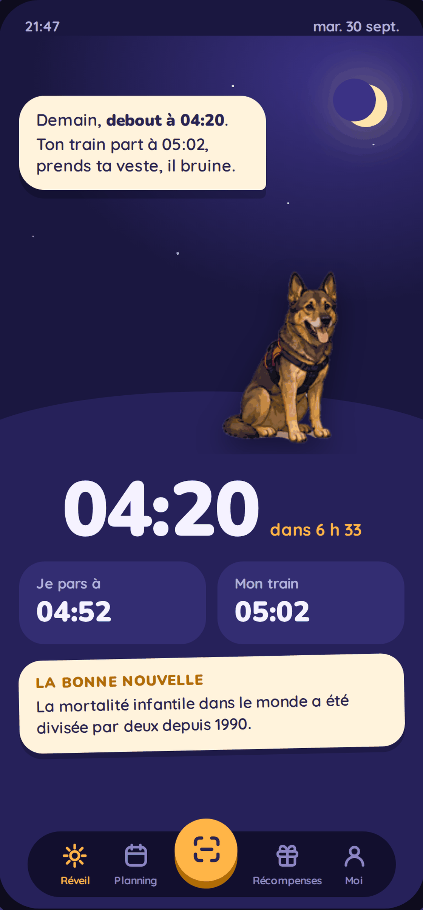
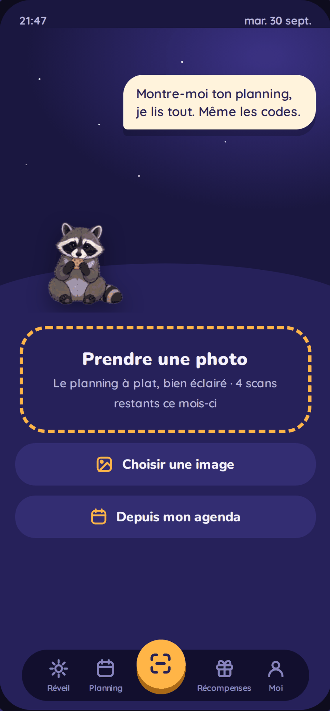
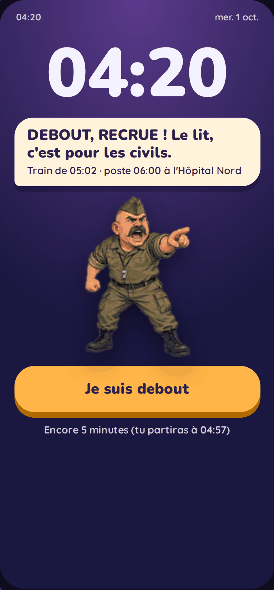
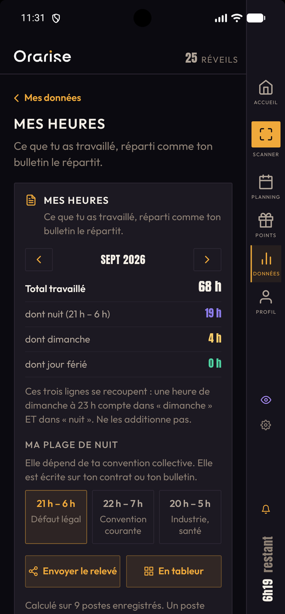

Il se lève avant toi.
Tu photographies ton planning. Orarise en extrait tes horaires, calcule l'heure de ton réveil selon ton trajet et le trafic, et vérifie la route pendant ta nuit — pour t'avancer si elle se dégrade.

Conçu pour celles et ceux qui ont beaucoup de modifications de planning... Et pas que
Hôpitaux · Usines · Sécurité · Restauration · Transports · CommerceUne photo de ton planning papier ou numérique suffit. L'intelligence artificielle lit les dates et les horaires automatiquement.
Tu fixes ton temps de préparation et ta marge de sécurité — une fois, à ton rythme. Orarise en déduit l'heure exacte du réveil selon ton embauche, ton trajet et le trafic. Tout reste modifiable à tout moment.
Au réveil, tu vois la météo, ton trajet du jour et l'heure de départ conseillée. Plus de calcul de tête à 5h du matin.
Chaque réveil réussi rapporte des points et allonge ta série. De quoi transformer le lever en petite victoire plutôt qu'en corvée.

Une photo suffit. Les nuits sont datées au jour de la prise de poste, pas au lendemain.

La route du moment, la météo à l'arrivée, l'heure à laquelle partir. Rien à calculer.

Nuit, dimanche, jour férié — de quoi relire ton bulletin de paie et poser une question.
Mode silencieux, écran verrouillé, téléphone en veille profonde : Orarise passe outre, comme le réveil du système. C'est la première chose qu'on a construite.
Une heure avant ton réveil, Orarise vérifie le trafic. Accident pendant la nuit ? Ton alarme sonne plus tôt, et te dit pourquoi. Et si tu préfères ne jamais être réveillé avant l'heure prévue, ça se désactive d'un geste — il n'avance jamais ton réveil sans ton accord.
Tu peux repousser tant que ça reste tenable. Passé la limite, le bouton se refuse et t'annonce combien de minutes il te reste avant de devoir partir. Aucun autre réveil ne sait faire ça — il faudrait connaître ton trajet.
Photographie ton planning papier. Les horaires sont lus et transformés en réveils — et tu valides avant que rien ne soit enregistré. Sur le planning du vestiaire, avec les noms de tous tes collègues, Orarise ne lit que ta ligne, et te demande laquelle c'est s'il a un doute.
Ton service écrit M, S, N, RH plutôt que des horaires ? Déclare-les une fois, et le scan les traduit tout seul — jours de repos compris.
Tu scannes, tu obtiens un code à six caractères, tes collègues l'entrent et récupèrent le planning — avec les codes de ton service. Aucun compte à créer. Et si c'est ton conjoint qui veut savoir quand tu travailles, il voit tes horaires sans que son réveil sonne pour toi.
Des horaires qui reviennent chaque semaine, ou une semaine sur deux ? Décris-les une fois, Orarise pose les réveils jusqu'à la date que tu choisis. Les postes que tu saisis à la main n'y sont jamais touchés.
Relie ton téléphone à celui d'un proche qui a Orarise. Si ton réveil sonne jusqu'au bout sans que tu l'arrêtes, il reçoit une notification. Ça ne marche que si ton téléphone est allumé, chargé et connecté : ce n'est pas un service de secours.
Le temps de route tient compte du trafic prévu à ton heure de départ précise. Tu ne prends jamais l'autoroute ? Dis-le, l'itinéraire s'adapte.
Un temps plein quelque part, un mi-temps ailleurs. Chaque réveil porte le nom de l'entreprise et son propre temps de trajet.
Médecin, préfecture : Orarise calcule l'heure de départ et te prévient au bon moment. Il ne te réveille que si l'heure l'exige vraiment.
Ta station, ou un morceau à toi. Et si le flux ne répond pas, la sonnerie du téléphone prend le relais en huit secondes — se réveiller ne dépend jamais du réseau.
Tu embauches à 00h30 ? Ton réveil doit sonner la veille au soir — Orarise le sait. Et un poste à 5h le dimanche du changement d'heure sonne quand même à la bonne heure. Ces deux cas font trébucher la plupart des réveils ; ici ils sont prévus depuis le premier jour.
Huit compagnons, chacun avec sa voix. Plus tu te lèves à l'heure, plus votre complicité monte — et elle ne redescend jamais.
Celles-là sont en cours de construction. Elles ne sont pas encore dans l'application que tu peux installer — on préfère te le dire plutôt que de les annoncer comme si elles existaient.
Les points s'accumulent déjà à chaque réveil réussi. Le catalogue qui permettra de les échanger viendra dans un second temps.
En train, tu choisis ta gare de départ et ta gare d'arrivée : Orarise récupère les horaires SNCF et cale ton réveil sur le dernier train qui te fait arriver à l'heure. Si ton train est supprimé, ton alarme est avancée pour celui d'avant. En bus ou en tram, tu tapes tes horaires une fois. À pied ou à vélo, il compte ton temps de trajet.
Laisse ton e-mail : tu recevras un seul message, le jour où Orarise sera disponible pour tout le monde. Aucun spam.
Au lancement, tout le Premium est offert jusqu'au 31 décembre 2026. Ensuite 2,99 € par mois ou 24,99 € par an — l'essentiel du réveil reste gratuit.
Ton adresse est stockée en France, ne sert qu'à ça, et n'est jamais revendue — en savoir plus.